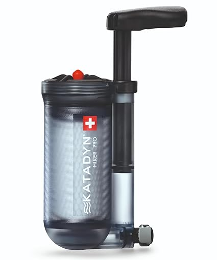

Fevereiro 2025
Meus amigos,
Este mês estamos focados em um suprimento de 2 meses de feijões e leguminosas. Armazene apenas se você gosta de comida deliciosa! Existem várias maneiras de armazenar e usar feijões e leguminosas. Os feijões são uma excelente fonte de proteína, baratos e substituem a carne. Podem ser armazenados secos e duram décadas. Também estão disponíveis enlatados e em frascos. Podem ser desidratados e rapidamente reidratados com água, por exemplo, feijão refrito.
Alguns exemplos de feijões armazenados incluem feijão enlatado, feijão refrito (disponível em latas, desidratado ou com feijão pinto seco). Há uma grande variedade de feijões e leguminosas para armazenar – incluindo feijão vermelho, feijão branco, feijão Anasazi, feijão preto, grão-de-bico, ervilhas partidas e soja. É útil ter uma combinação de opções de acesso rápido – como enlatados ou desidratados – e feijões secos para armazenamento mais longo.
Como a maioria dos alimentos armazenados, os feijões são melhores armazenados na ausência de oxigênio e luz. O oxigênio pode levar à rancidez dos óleos dos feijões e a luz desbota rapidamente sua cor. As embalagens ideais são latas #10 ou sacos tipo Mylar. Potes de conserva são adequados para quantidades menores, desde que armazenados em local escuro. Absorvedores de oxigênio devem ser usados para remover oxigênio e aumentar a vida útil e minimizar sabores desagradáveis.
Um estudo da BYU indicou que amostras de feijões armazenadas por até 30 anos tiveram mais de 80% de aceitação em painel de degustação.
Diferentes opções de feijão incluem: Hummus feito com grão-de-bico enlatado; ervilhas verdes secas para sopa; feijões pinto ou Anasazi para feijão refrito, seja enlatado ou desidratado, fácil de preparar em tortilhas; feijão branco para chili branco com frango; feijão vermelho para chili vermelho; feijão preto para molhos; feijão vermelho e arroz, prato cajun tradicional; Dal, prato indiano saboroso feito com lentilhas vermelhas.
A quantidade recomendada de feijões por pessoa para um suprimento de 2 meses é 12 libras por pessoa. Se armazenar enlatados e secos, calcule que 4 latas equivalem a 1 libra de feijão seco. Feijões são uma forma econômica de fornecer proteína para sua família continuamente. Ter variedade de feijões e leguminosas traz mais sabor e variedade para as refeições familiares.


 A água potável é crucial para a sobrevivência. Ter um filtro de água confiável é essencial para garantir que sua água seja segura para consumo, especialmente durante emergências. Certifique-se de verificar e manter seu filtro regularmente para estar preparado.